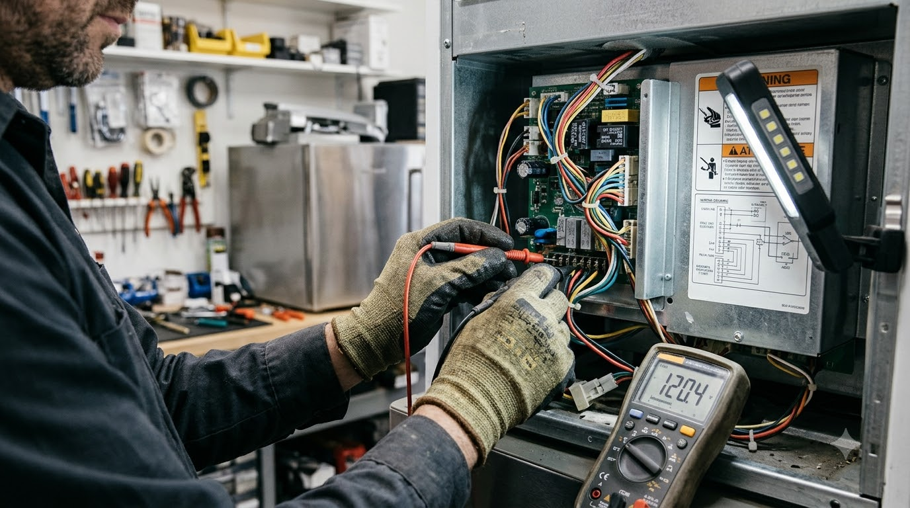
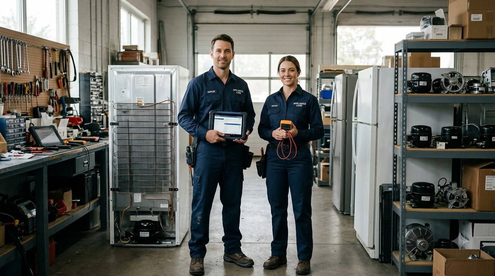

Care For The Appliances That Keep Your Home Running.
A refrigerator is at the heart of household nourishment, comfort, and routine. We demonstrate how careful technical diagnostics, clear communication, and respectful appliance care create dependable customer experiences.

Systematic Inspection Before Any Decision
Modern refrigeration combines thermodynamics, airflow mechanics, electrical logic, and sealed circuits. When an appliance shows irregular cooling or audible distress, jumping to conclusions often leads to unnecessary expenses.
Our demonstration framework emphasizes step-by-step physical observation: measuring perimeter temperatures, inspecting door gasket suction, examining defrost drains, and evaluating motor vibration before proposing practical solutions.
- Household appliance service focus
- Commercial cooling enquiry support
- Honest repair-vs-replacement guidance
- Clean, respectful in-home service
Our Service Approach
Four foundational pillars that guide every diagnostic assessment, customer interaction, and preventive maintenance task.
Careful Inspection
We prioritize methodical examination over guesswork. Every assessment examines physical seals, electrical intake, airflow passages, and defrost cycle integrity.
Practical Assessment
We evaluate whether an appliance repair represents a sensible long-term value, factoring in age, overall system condition, and parts availability without pressure.
Clear Communication
We translate technical jargon into understandable facts. Customers receive clear explanations of what was tested, what was discovered, and the next steps.
Responsible Maintenance
We advocate for preventive practices—such as keeping coils clear of pet hair and ensuring proper ventilation—to prolong compressor lifespan and maintain energy efficiency.
Cooling Architecture Expertise
Different refrigerator designs rely on unique thermal dynamics. Explore the core configurations we evaluate across residential and commercial settings.
Single Door Refrigerators
Direct cooling designs with an integrated internal freezer shelf. Requires careful manual defrost inspection, thermostat calibration, and ice trough drainage checks.
Double Door Refrigerators
Top-freezer and bottom-mount frost-free units featuring forced air circulation. Diagnostic focus is on defrost heaters, bimetal thermostats, and duct dampers.
Side-by-Side Units
Vertical split dual-zone compartments with independent airflow management, electronic PCB modules, dispenser solenoids, and dual thermistor networks.
French Door Refrigerators
Multi-zone architectures with twin evaporators, bottom slide-out freezer drawers, pantry drawer temperature selectors, and articulated door mullion seals.
Frost-Free & Direct Cool
Understanding the contrast between convection air loop cooling (frost-free) and natural coil conduction cooling (direct cool) to guide proper diagnosis.
Commercial Refrigeration
Heavy-duty reach-in chillers and retail display coolers requiring robust airflow velocity, heavy duty fan motors, and durable commercial door hardware.
Illustrative Service Team Representation
A demonstration view of technician roles and service specializations. (Note: These are illustrative demo profiles for portfolio presentation purposes; no real individuals or certifications are represented).

Diagnostic & Assessment Specialists
In a functioning enterprise, field technicians undergo rigorous safety training in appliance electrical testing, mechanical alignment, and customer care.
This demonstration showcases how service companies can structure specialized roles—such as domestic cooling diagnostics, commercial refrigeration assessment, and installation calibration—to provide customers with clear, structured support.
Need Assistance With Your Refrigerator?
Review our categorized service options or identify your specific appliance symptom.